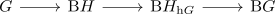
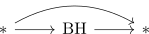
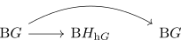
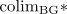

semidirect product via orbit
Proposition
Let $G \rightarrow \mathrm{Aut}_{\mathrm{Grp}}(H)$ be a group action. This then induces a group action $G \curvearrowright BH$. Then consider the fiber sequence

where i think we get some split via some colimit calculation in $\mathrm{An}$ ? use type of colimit in a coslice category to get
where we are pointed, hence have an equivariant diagram

so applying colimit gives

